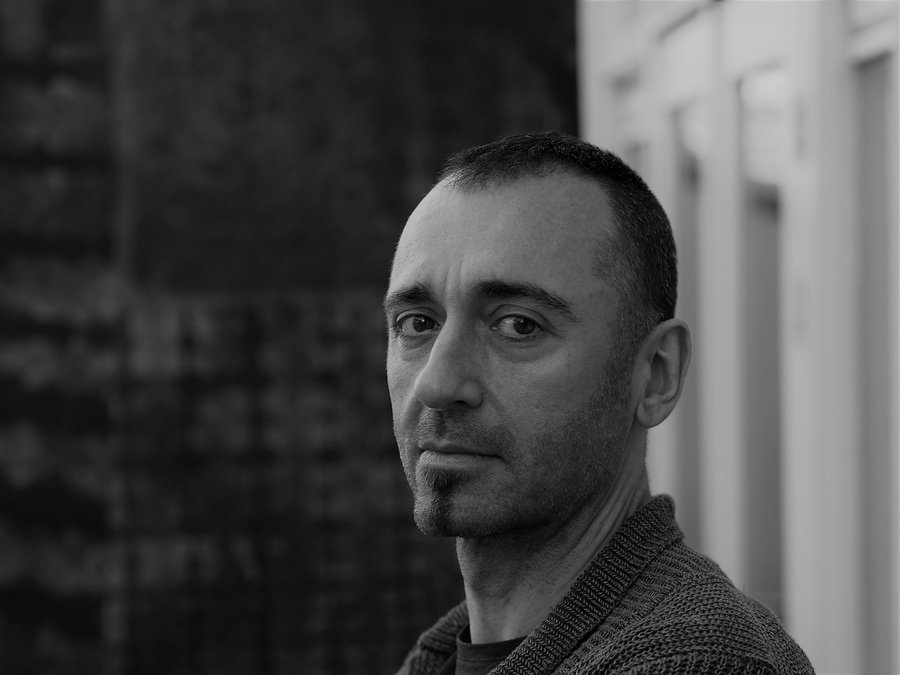

Valentin Bakardjiev woonde en werkte in Bulgarije, de Dominicaanse Republiek en Italië. Hij is nu gevestigd in Amsterdam. Zijn werk laat zien hoe culturen verbonden zijn door gezamenlijk vakmanschap, en hoe mens, natuur en materiaal bij elkaar horen.
Beschikbaar werk en opdrachten op maat? Kijk op linktr.ee/valentinbakardjiev of stuur een bericht.